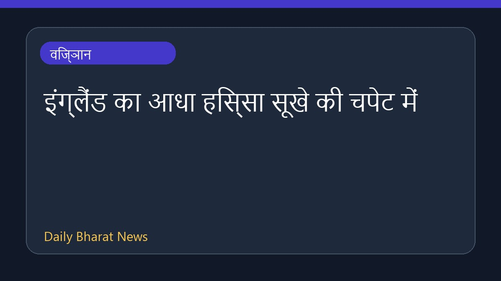

इंग्लैंड का आधा हिस्सा सूखे की चपेट में

पर्यावरण एजेंसी ने घोषणा की है कि इंग्लैंड का आधे से अधिक हिस्सा अब सूखे की चपेट में आ गया है। यह स्थिति अत्यधिक गर्म और शुष्क मौसम के लंबे दौर के बाद पैदा हुई है, जिसने देश भर में नदियों, फसलों और प्राकृतिक पर्यावरण को बुरी तरह प्रभावित किया है। इस संबंध में फिलहाल विस्तृत जानकारी सीमित है, लेकिन स्थिति पर कड़ी नजर रखी जा रही है ताकि इसके प्रभावों का आकलन किया जा सके।
मूल स्रोत: BBC Science
More than half of England in drought, Environment Agency declares ↗
More than half of England in drought, Environment Agency declares ↗